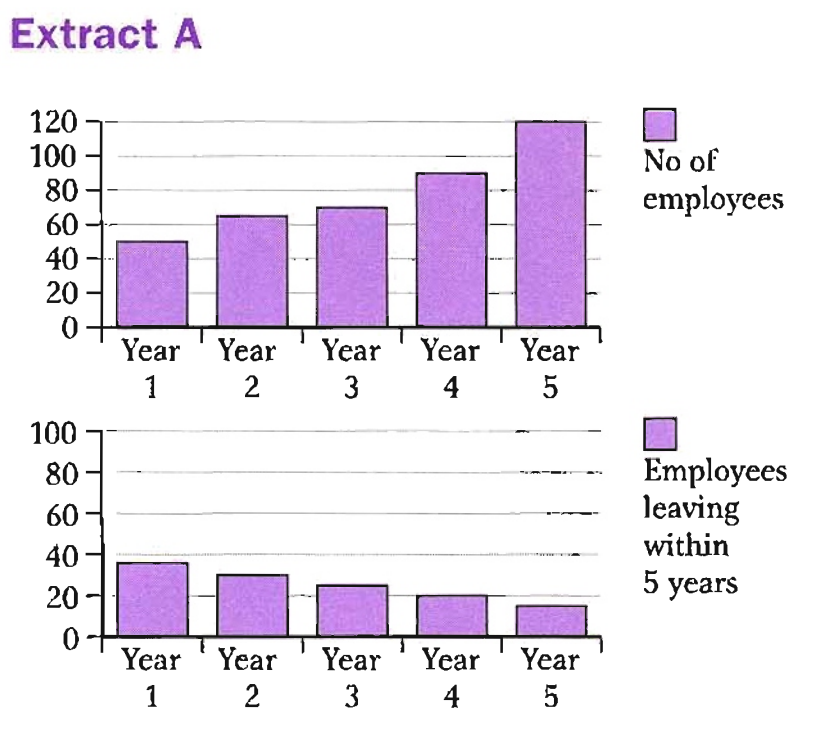
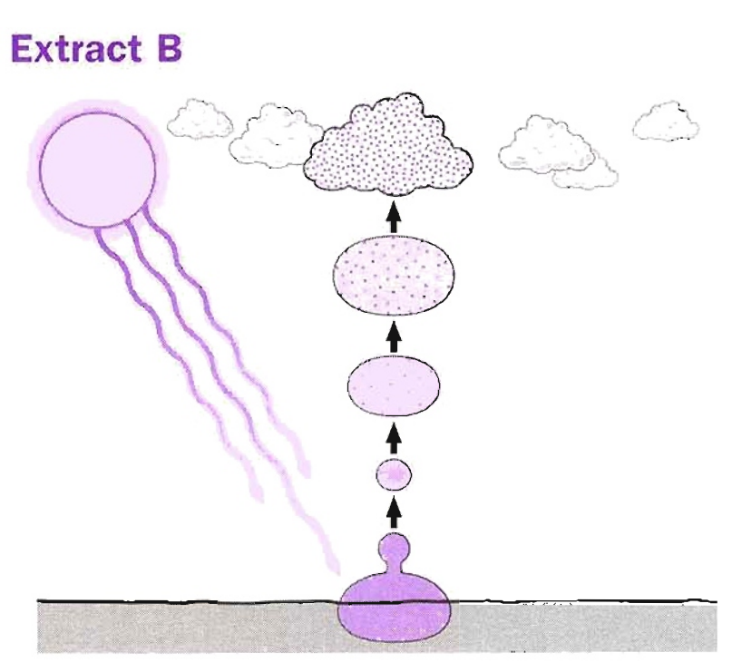

Pre-listening: Free-time Activities
You are going to hear a woman interviewing a student called Peter for a survey about what people do in their free time. Before you listen, look at the list of activities below. Which activities do you think the student does in his free time?
- Playing football
- Painting / Drawing
- Cooking
- Playing video games
- Playing in a band
- Playing golf
Listen and check — Track 02
Listen to the interview and check whether your predictions were correct.
Track 02 — Peter's Interview
Context listening – free-time survey
Listen again — True or False?
Listen again and decide if each statement is true or false.
Categorise the sentences from Exercise 3
Look at your answers and write the sentence number(s) that match each category.
B1 — Present Simple
| Form | Example |
|---|---|
| + verb / verb + (e)s | He plays tennis. |
| − do/does not + verb | She doesn't play tennis. |
| ? Do/Does … + verb? | Do you play tennis? |
We use the present simple:
- To talk about regular habits or repeated actions:
I get up really early and practise for an hour or so most days.
I use the Internet just about every day.
Words often used: alwaysgenerallynormally usuallyoftensometimes rarelyneverevery day - To talk about permanent situations:
My parents own a restaurant. - To talk about facts or generally accepted truths:
Students don't generally have much money.
If you heat water to 100°C, it boils.
Often used with: generallymainlynormallytraditionally - To give instructions and directions:
You go down to the traffic lights, then you turn left.
To start the programme, first you click on the icon on the desktop. - To tell stories and talk about films, books and plays:
In the film, the tea lady falls in love with the Prime Minister.
I have worked there since I was 15. (not: I work there since I was 15) → see Unit 3
B2 — Present Continuous
| Form | Example |
|---|---|
| + am/is/are + verb + -ing | He's living in Thailand. |
| − am/is/are not + verb + -ing | I'm not living in Thailand. |
| ? Am/Is/Are … + verb + -ing? | Are they living in Thailand? |
We use the present continuous:
- To talk about temporary situations:
I'm studying really hard for my exams.
My cousin is living in Thailand at the moment. (= he doesn't normally live there)
Often used with: at the momentcurrentlynowthis week/month/year - To talk about actions happening at the moment of speaking:
I'm waiting for my friends. - To talk about trends or changing situations:
The Internet is making it easier for people to stay in touch with each other.
The price of petrol is rising dramatically. - To show envy or criticism — with alwaysconstantlycontinuallyforever:
My mum's always saying I don't help enough! (complaint)
He's always visiting exciting places! (envy)
B3 — State Verbs
💭 Thoughts
agree, assume, believe, disagree, forget, hope, know, regret, remember, suppose, think, understand
I assume you're too busy.
❤️ Feelings
adore, despise, dislike, enjoy, feel, hate, like, love, mind, prefer, want
I love music.
👁 Senses
feel, hear, see, smell, taste
This pudding smells delicious.
🏠 Possession
have, own, belong
My parents own a restaurant.
📝 Description
appear, contain, look, look like, mean, resemble, seem, smell, sound, taste, weigh
You look like your mother.
⚠ Exception: state verbs CAN be continuous when the meaning is temporary
(now — action)
(opinion — not temporary)
(action — temporary)
(description — general truth)
(experiencing — temporary)
(possession)
Choose the best ending for each sentence (1–8)
Fill in the gaps with the correct form of the verbs in brackets
Fill in the gaps using verbs from the box in the correct present tense
Find and correct the six incorrect verbs in these extracts
The incorrect verbs are marked. Write the corrected form in the input next to each number.
Extract A — Employee graph description

Extract B — Cloud formation

Track 03 — Listening Section 1
Listen for Questions 1–10
Questions 1–3 — Choose the correct letter: A, B or C
Which sport is the woman interested in?
Questions 4–10 — Complete the notes
Write NO MORE THAN THREE WORDS AND/OR A NUMBER for each answer.